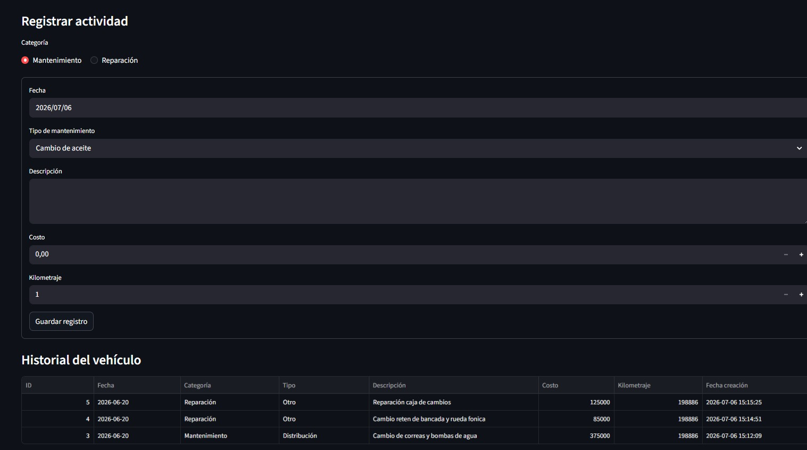

Dashboard
Vehicle Overview
The dashboard provides a summarized view of vehicle activity, maintenance status and relevant information for quick monitoring.

Web application developed with Python and Streamlit for managing cars and motorcycles, maintenance history, expenses and upcoming services. The project evolved from local SQLite persistence to a cloud architecture using PostgreSQL and Supabase.
Overview
Vehicle maintenance information is often scattered across notes, invoices or memory. Mi Garage Control centralizes this information and provides a clear view of maintenance history, expenses and upcoming services.
The application was developed with Python and Streamlit using PostgreSQL for data persistence hosted on Supabase. Application logic manages vehicles, maintenance categories, expenses and service estimation based on mileage, while Plotly provides interactive data visualization.
Application
Screenshots showing the main workflows, service tracking and data visualization features available in Mi Garage Control.
The dashboard provides a summarized view of vehicle activity, maintenance status and relevant information for quick monitoring.
Maintenance, repairs and improvements can be recorded with their associated vehicle information, mileage and costs.

The application estimates upcoming maintenance based on mileage and previous vehicle records, helping users anticipate future service requirements.

Reports help analyze recorded expenses and maintenance activity, making vehicle costs easier to understand over time.

Vehicles can be registered and managed individually, keeping their information and maintenance history organized in one place.

Each vehicle maintains an organized record of maintenance, repairs and improvements, including mileage, dates and costs.

The application estimates upcoming maintenance based on vehicle mileage and previous records, helping users anticipate future service requirements.
The dashboard provides a summarized view of maintenance activity and expenses, using charts to make vehicle costs easier to understand and analyze.
Technical Value
An end-to-end Python web application covering data modeling, business logic, visualization, database migration and cloud deployment.
The first version used SQLite and was designed for local use. As the project evolved, the persistence layer was migrated to PostgreSQL hosted on Supabase and the application was deployed through Streamlit Community Cloud, allowing it to be accessed from both desktop and mobile devices.
Architecture
The project evolved beyond its initial local prototype into a web application with cloud-hosted persistence.
Future Improvements
Planned improvements to expand the application and support more advanced vehicle management use cases.
Extend the application beyond personal vehicle management by supporting transferable maintenance histories and workflows that could also be useful for workshops, dealerships or vehicle fleet management.
Mi Garage Control is currently deployed online and can be accessed directly from a web browser.